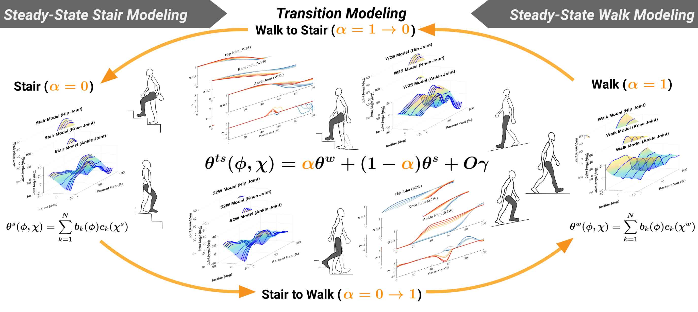
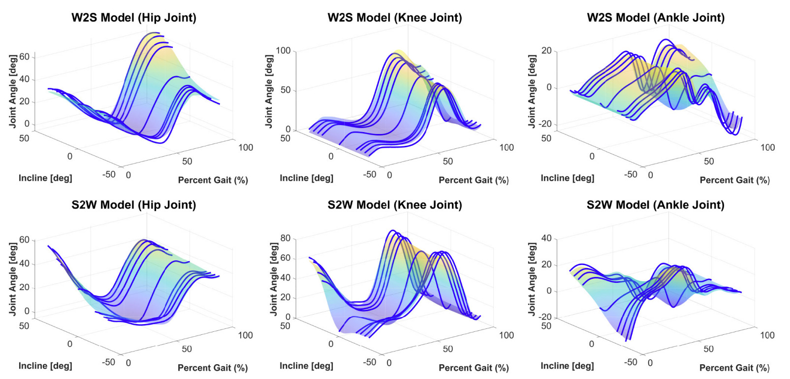

过渡运动学模型（TMRB 2022）
科研


过渡运动学模型通过将下肢运动学表示为多个稳态步态行为的 凸组合， 在单一连续框架中统一描述步态与活动转换过程。 该方法能够在不依赖离散模式切换的情况下， 实现不同运动活动之间（如平地行走 ↔ 上下楼梯）的平滑过渡， 避免了传统切换方法中常见的时序误差与用户不适。
该模型在经典步态表征与活动转换行为之间建立了桥梁， 通过引入对平滑性与连续性的数学约束， 为假肢与外骨骼系统提供了一种更加鲁棒、可推广的控制建模基础。
本人贡献
- 构建基于凸组合的运动学模型， 通过融合平地行走与楼梯运动的稳态参考轨迹， 生成活动转换过程中的连续运动。
- 提出满足可微性与平滑性约束的数学表述， 确保整个步态周期内的轨迹连续性与跃度受限特性。
- 搭建实验验证流程， 在多名受试者与多种运动场景下验证运动学重构精度。
研究意义
- 为活动转换提供了不同于离散模式切换的 理论化连续建模方法， 显著减少控制行为中的突变与不可预测性。
- 支持多种转换情形（平地行走 ↔ 楼梯）， 为辅助行走设备实现更加自然的运动模式奠定基础。
- 从理论与实验层面展示了 连续转换模型 相较于混合或有限状态方法在舒适性与稳定性方面的潜在优势。
技术要点
生物力学建模
轨迹平滑
凸组合策略
连续转换建模
本研究于密歇根大学 LocoLab 开展，导师为 Robert D. Gregg 教授。